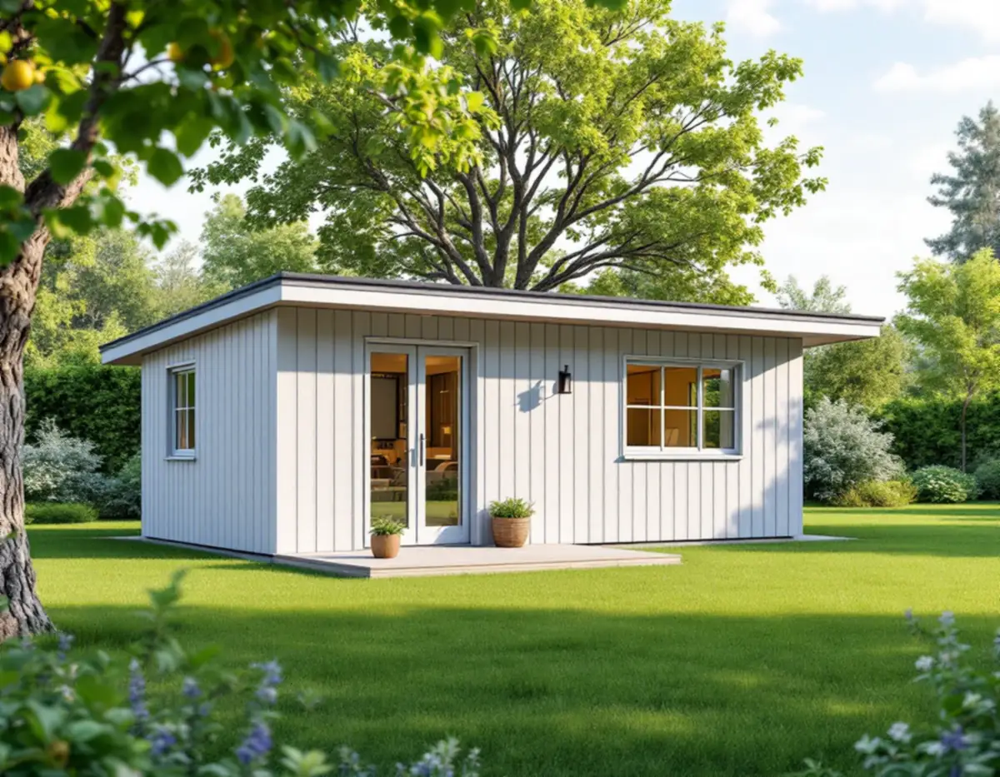
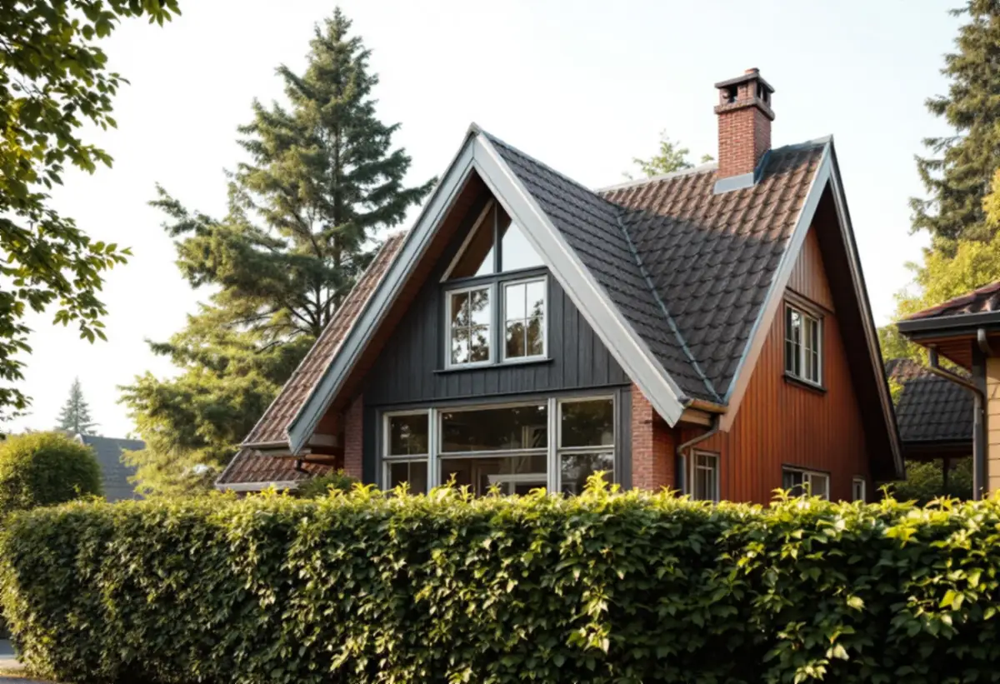
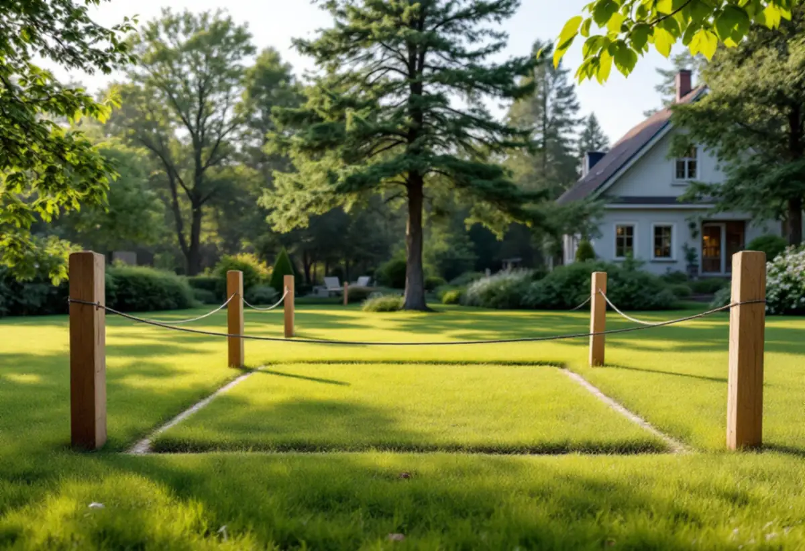

Platsbesök
Gratis besök där vi tittar på tomten, villan och träden.
På Kungsholmen bor de flesta i flerbostadshus, och ett gårdshus på tomten är bara aktuellt där det finns villor. Det gör det främst på Stora Essingen. Geal Entreprenad AB bygger attefallshus och tar fram underlaget för ett bygglov när villastadens kulturvärden kräver det.

Stadens områdesfakta för 2025 räknar 272 småhus med äganderätt i Kungsholmens stadsdelsområde. 268 av dem ligger på Stora Essingen. Där finns också 35 småhus som hyrs ut och elva som är bostadsrätter. På Lilla Essingen och i resten av stadsdelsområdet bor man i stort sett bara i lägenheter.
Ett komplementbostadshus ska enligt Stockholms stad komplettera ett en- eller tvåbostadshus som redan finns på tomten. På Kungsholmen gäller frågan alltså i praktiken villa- och radhusägarna på Stora Essingen. Den som bor i en bostadsrätt i ett flerbostadshus kan inte bygga ett attefallshus på gården, eftersom huset man bor i inte är ett småhus.

Stadens vägledning Varsam utveckling av småhus- och villaområden räknar Stora Essingen till villastäderna och markerar området som kulturhistoriskt värdefull miljö i sin tabell. Villastäderna beskrivs som privat organiserade områden med individuellt utformade hus, glasverandor, takkupor och snickarglädje, där grönskan i trädgårdarna håller ihop gatubilden.
Vägledningen ber att man bibehåller gaturummens gröna karaktär och undviker att hårdgöra grönytor. För ett gårdshus betyder det att placeringen spelar roll: ett hus som tar trädgården mellan villan och gatan påverkar mer än ett som står mot baksidan. Vi ritar in befintliga träd och höjder på situationsplanen innan vi föreslår ett läge.
Stockholms stad skriver att utökad lovplikt gäller för en byggnad, tomt eller ett bebyggelseområde som är särskilt kulturhistoriskt värdefullt, och att det omfattar alla typer av komplementbyggnader. Då krävs bygglov även för ett hus som annars hade varit lovfritt. Om fastigheten berörs ser man i Stadsmuseets klassificeringskarta, där en grön ring markerar områden som pekats ut som särskilt värdefulla i översiktsplanen.
Vägledningens markering och kartans ringar är inte samma sak, så vi slår upp just din fastighet och frågar Stadsmuseet om det är oklart. Krävs bygglov tar vi fram ritningar som visar hur gårdshuset förhåller sig till villan i höjd, material och kulör.
Utan bygglov får komplementbostadshuset ha högst 30,0 kvadratmeter byggnadsarea och en taknock på högst 4,0 meter. Det ska vara mindre än villan det kompletterar, och tillsammans med andra komplementbyggnader som byggts utan lov, till exempel en gammal friggebod, får byggnadsarean inte bli mer än 45,0 kvadratmeter.
Huset ska stå 4,5 meter från tomtgränsen. Vill du bygga närmare behövs ett skriftligt medgivande från grannen, och mot gata eller park är det staden som ska medge. Ska huset få vatten och avlopp, ventilation eller en eldstad krävs en anmälan och startbesked innan bygget börjar. Mer om grunderna finns i reglerna för attefallshus.
Ett komplementbostadshus som inte kräver lov får enligt Stockholms stad strida mot detaljplanen och till exempel placeras på prickmark. Kräver huset bygglov på grund av kulturvärdena prövas det däremot mot planen. Det är ytterligare ett skäl att börja med att ta reda på om tomten omfattas av utökad lovplikt.

Gratis besök där vi tittar på tomten, villan och träden.
Vi kontrollerar klassning och detaljplan för fastigheten.
Situationsplan, fasader och kulör som passar villan.
Bygglov där kulturvärden kräver det, annars anmälan.
Grund, stomme och tak efter startbesked.
Installationer, ytskikt och slutbesked.
Skatteverket skriver att det inte går att få rotavdrag för att bygga en ny bostad eller en ny fristående byggnad som en friggebod eller ett garage. Ett attefallshus står fritt på tomten och räknas därför utan avdrag i kostnadsförslaget.
Husets storlek och planlösning, grundläggning på tomtens berg eller lera, om bygglov och ritningar för en kulturmiljö behövs, vatten och avlopp och hur långt material måste bäras från gatan. Efter ett gratis platsbesök får du ett skriftligt kostnadsförslag.
Komplementbostadshus på tomten.
Attefallshus →Takbyte, takbesiktning och plåtarbeten.
Takläggare på Kungsholmen →Plåttak i stenstaden och funkis i Fredhäll.
Takrenovering på Kungsholmen →Stambyte, stämmobeslut och 30-talshus.
Badrumsrenovering på Kungsholmen →Föreningens stambyte.
Byggföretag på Kungsholmen →Målning av puts och gårdsfasader.
Fasadmålning på Kungsholmen →Slätputs på funkishus, lagad utan synliga skarvar.
Fasadrenovering på Kungsholmen →Stenhusen, funkishusen och bygglovet.
Fönsterbyte på Kungsholmen →Fönstret i bostadsrätten, insida och beslag.
Fönsterrenovering på Kungsholmen →Stegljud, golvval och styrelsens tillstånd.
Golvläggare på Kungsholmen →Slipa och lacka golvet i bostadsrätten.
Golvslipning på Kungsholmen →Fläkten, kanalen och föreningen.
Köksrenovering på Kungsholmen →Funkislägenheter, stadgar och ROT i bostadsrätten.
Målare på Kungsholmen →Huvar, skorstenar och genomföringar.
Plåtslagare på Kungsholmen →Förvaring och platsbyggt i små lägenheter.
Snickare på Kungsholmen →Villorna på Stora Essingen.
Takbyte på Kungsholmen →Ny tapet på putsade lägenhetsväggar.
Tapetsering på Kungsholmen →Uterum, kupor och skärmtak.
Tillbyggnad på Kungsholmen →Hela lägenheten från golv till tak.
Totalrenovering på Kungsholmen →